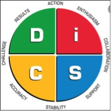

Salesforce Developer advertisement
The ideal job for me in the Information Technology industry is a Salesforce Developer. This role is advertised through Vocus Group to work in the telecommunications team to provide Vocus Enterprise, Government and Wholesale a Salesforce platform to meet business needs available here: https://www.vocus.com.au/careers/opportunities?ja-job=3550604/
Position
Specifically, the role requires integrating their Salesforce system with platforms in billing and assurance, deploying the Salesforce system and new products to the businesses, building and supporting related applications, developing documents including manuals for training users and developers of the Salesforce system, trouble shooting issues and developing enhancements of the Salesforce system set out in the project requirements.
This position is appealing to me as I am very familiar with Customer Relationship Management (CRM) Systems from my current job in a bank. I am a good listener and believe I would be capable of understanding the wants of customers and the needs of business in order to deliver a successful Salesforce system. I would also enjoy the opportunity to work in a team to code and build a platform that achieves their business requirements and is able to integrate seamlessly into their existing platforms. I believe I would enjoy this type of a role as I like to problem solve, be creative and innovative in designing solutions for end users.
Skills, qualifications and experience required
For the role advertised it seeks someone with at least four years commercial IT experience, two years’ experience in a Salesforce platform, excellent communication skills, experience and commitment to customer service and someone is able to deliver within the agreed timeframes. From looking online for other Salesforce Developer roles it would be highly desirable to have educational qualifications in the form of a bachelor’s degree in IT, computer science or a related field and certification in Salesforce applications or processes. Other skills that would be helpful to have include good communication skills, analytical abilities, programming skills, and proficiency in languages such as MySQL, JavaScript, or Apex.1
Skills, qualifications and experience you currently have
I have over ten years’ experience in the banking sector and currently work as a change consultant at the National Australia Bank with training completed over the years specific to financial services. I am able to work independently, think practically to achieve results, manage projects and staff, liaise with a range of internal and external stakeholders, have excellent written and verbal communication skills, be strategically minded and I am a positive and enthusiastic person.
Plan to obtain the necessary skills, qualifications and experience required
I believe I possess the core skills necessary, as outlined above, so in progressing a career in this industry I plan to do the following:
Undertake a bachelors degree in Information Technology
Within my studies ensure I undertake programming related courses and become proficient in MySQL, JavaScript, Apex
Undertake certification Salesforce applications
try and gain employment in the industry at an entry level role to obtain the necessary industry experience.
Results of the Myers-Briggs Indicator (MBTI) test
From the 16Personalities Myers-Briggs test, my personality type is the Assertive Virtuoso (ISTP-A), which stands for Introverted, Sensing, Thinking, Perceiving.2 This personality type represents 5% of the population and is considered to be bold, practical, master of all kinds of tools, has an individualistic approach to life in that they are confident they know the best way to do something, enjoy creating, troubleshooting, trial and error and first-hand experience.
My results from the individual traits is that I am 79% introverted, 73% observant, 72% thinking, 64% prospecting and 51% assertive. My strengths are being optimistic and energetic, creative and practical, spontaneous and rational, know how to prioritise, great in a crisis and am relaxed. My weaknesses are stubbornness, insensitive, private and reserved, easily bored, dislike commitment and risk behaviour.
According to the test possible career paths suited to this personality type include mechanics, engineers, graphic designers, and forensic scientists. They are also well suited to jobs which require a crisis response, such as firefighter, paramedic, detective, pilot and a police officer.
The results are not a surprise to me and a lot of this information they stated about this personality type I knew already. The most interesting thing about this result is the suggested career paths, some of which I had considered. In terms of workplace habits and how this profile may affect working in a team one of the top requirements for success is to have a sense of unpredictability and excitement. The virtuoso personality type is not naturally emotional or empathetic, and in some instances are blunt in the way they communicate with others which can lead to misunderstandings or hurt feelings. I will take this into account ensuring I communicate in a way that is less blunt to ensure I do not unintentionally cause misunderstandings.
Results of an online learning style test

From a PeronslaityMax test using the VAK model my learning style is made up of 44% kinesthetic, 31% visual and 25% auditory. As kinesthetic is my primary learning style it means that I learn best by doing. I am tactile and would rather participate than watch, I appreciate the opportunity to experience real world and on job learning, that I get satisfaction from building things with my hands, classes with physical experiments and that I can become restless without physical activity.3
As a kinesthetic learner it means I better at learning with hands-on experiences, rather than textbook learning. My secondary style of learning is visual where I learn best by seeing, including pictures, charts, diagrams, videos, observing from my surroundings and by converting spoken instructions into visual form by taking notes. This style of learner prefers classes and lectures to hear lessons and benefits from group discussions.
As kinesthetic and visual styles are my preferred technics for learning I will use this for working in a group by ensuring I participate in the group discussions, utilizing, where possible, stand-up group meetings to ensuring I am not restless, take notes from lectures, study in short blocks, incorporate visuals and other images and illustrations.
DISC personality test
The DISC profile is a way of categorising four main behavioural traits and characteristics that are common for these categories.4 According to my DISC profile test I score highly in dominance and steadiness with a result of 43% dominance, 30% steadiness, 15% compliance and 11% influence.
The DISC profile stands for the following:
Dominance is the way people deal with problems, assert themselves and control situations.
Influence is about the way you deal with people, communicate and relate to others
Steadiness is about temperament in terms of patience, persistence, and thoughtfulness.
Compliance is about how you approach and organize your activity, procedures and responsibilities.
A high dominance score means I am highly motivated by achieving results and success, I am direct, demanding, forceful, strong willed, driven, determined, self-confident, impatient, fearful of being vulnerable or taken advantage of and values competency, action, results, personal freedom and challenges.5 I am a self-starter, confident, risk taker, problem solver, prefer to lead rather than follow and prefer leadership and management positions.6
I also have a high steadiness score, which means I am a person who is highly motivated by cooperation, opportunities to help, proritises giving support, collaboration and maintaining stability, am calm, patient, predictable, deliberate, stable and consistent, fearful of change, loss of stability and offending others and values loyalty and security.
Apparently a high dominance and steadiness score is extremely rare as they are opposing sets of values and motivations.7 However, the motivating factors behind these two styles are related in that dominance is about power and control and steadiness is a need for certainty and avoid change.
Working in a team taking into consideration these traits I will need to be more patient, sensitive of others in the group and allow for greater deliberation. I should also try and be quicker to adapt to change or unclear expectations, embrace multitasking and confront others where needed. For others in my team, according to this profile I receive communication better if others in my team are direct with me in giving me the bottom line, are concise and brief, avoid repetition and focus on solutions rather than problems.

Project overview
My project idea is developing an App called “Find a Loo“ that will allow you to search and locate nearby toilets. The idea being whenever nature calls we will find the right loo for you. This App will be marketed as a convenience tool, as sometimes you need a loo in a hurry and are unfamiliar with the surroundings so do not know where the best places are to go in a hurry. The App will gather data from users and provide information about toilets functionality, user experience and review. The users of the App will have the ability to give ratings out of 5 stars, take and add pictures, pinpoint new locations of public toilets nearby, save favorite public toilets for the next time they are in town.
Motivation
I came up with this concept based on my experiences travelling and having to visit public toilets, but not knowing the cleanliness or which toilet was the best one in the area for privacy. It is illegal to urinate and defecate in public, and so there is a real need to help people to be informed of the location of facilities they can relieve themselves in a hurry. There are around 4.8 million individuals in Australia with bladder or bowel control problems, people with kidney problems, pregnant women, babies and others vulnerable members of the community that could benefit from this App. The Apps slogan will be - How often have you walked into an unpleasant toilet not knowing that around the corner a 5 star loo was waiting for you?
Description
The Department of Health already hosts a National Toilet Map, which is project of the National Continence Program. There is also several other Apps out there in the market including Where is Public Toilet, Flush – Find Toilets/Restrooms. However, this App will go further than just providing the locations of toilets, it will provide both 18,000 public and private access loos (such as restaurants, cafes, stores, petrol stations etc) and more importantly provide users of the App with much more data about the facilities and reviews of the particular loo.
The Find a Loo App will provide the following features:
Location by reference to google maps, which can input directions on how to get there
Cleanliness reviews
Type of toilet paper including number of ply or warnings if there is no paper
Type of toilet in whether it is flushable, composting, bidet or a drop loo (such as those at national parks)
Accessibility specifications – male, female, unisex, disability and ambulant access
Presentation and mood of the loo, such as music playing
Lighting and acrostics
Water efficiency
Privacy and surroundings for people with anxiety issues
Comfort of seat
Additional features such as whether the loo has a baby changing table, showers, faucets with fresh drinking water, sharps and sanitary bins
Opening hours
Parking nearby
The users of the App will be made to feel like a community of loo supporters to help everyone be informed about toilet facilities in their time of need. It will be particularly important for the success of the App for users to make accurate and meaningful contributions to the dataset to ensure its most up to date and complete. The initial App launch will be Australian based only then revised to add additional countries/markets.
Tools and Technologies
In developing this App I would require the following software, hardware and other equipment:8
Application Program Interface to access Geolocation and Google maps.9
Application Program Interface to access to users GPS location data.
A route mapping software solution coded into the program.
Data security protocols and malware protection.
Mobile development software application such as AppyPie, bizness apps, ibuildapp and Appery.io. The software program would need to be compatible with the following platforms Android, iphone (IOS) and web-based.10
Cloud based data storage for user photos and comments and access to a server.
SQL database.
Integrated development environment such as Eclipse.
Open source CSS external librarys’ and plug-in software.
A computer with at least 2GB of RAM and 2GB hard disk space.
Skills Required
The main resource I would require is a full stack web developer who can develop both the client interface for the App and the back-end technology including the database, security protocols, APIs, and coding of JavaScript, CSS, HTML, SQL.11 I would also require an understanding of cloud based storage systems, data security skills and basic coding skills. It would be feasible for me to hire someone to assist with the App build, but acquiring the necessary skills and knowledge would take some time and it would not be something I could initiate immediately.
There are some potential drawbacks and obstacles, including:
User uptake on the App in finding users in a niche market and promoting and marketing the App.
Building an integrated map with high quality data and accurate location.
Ability to have an App that is integrates with all platforms (e.g. Andriod, IOS).
Continued App maintenance.
Security of users’ information and privacy.
Financial feasibility of the App as its proposed to be a free App for users and would require maintenance and other ongoing costs.
Fixing bugs and glitches.
Outcome
The project would be successful if thousands of Australians download the “Find a Loo“ App and are able
to share data and utilise the information in the App to obtain up to date and accurate information on
public and some private access toilets. The impact of the App would hopefully lead to users of toilets
having a nicer user experience, be able to conveniently find the right type of toilet for their needs in a
hurry and the public would benefit from enhanced sanitation. Beneficiaries of the App include
individuals with continence issues and other potentially vulnerable members of the community,
travelers unfamiliar with their surroundings, government agencies including the Department of Health
and land planning authorities, local councils and national parks that could use the information to
identify dirty toilets that need cleaning, restocking of soaps and toilet paper or other maintenance issues
identified.